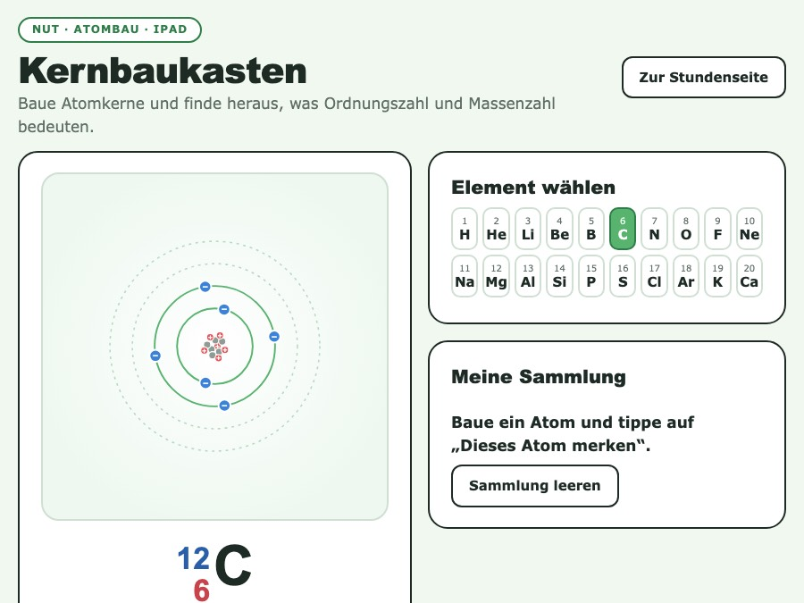
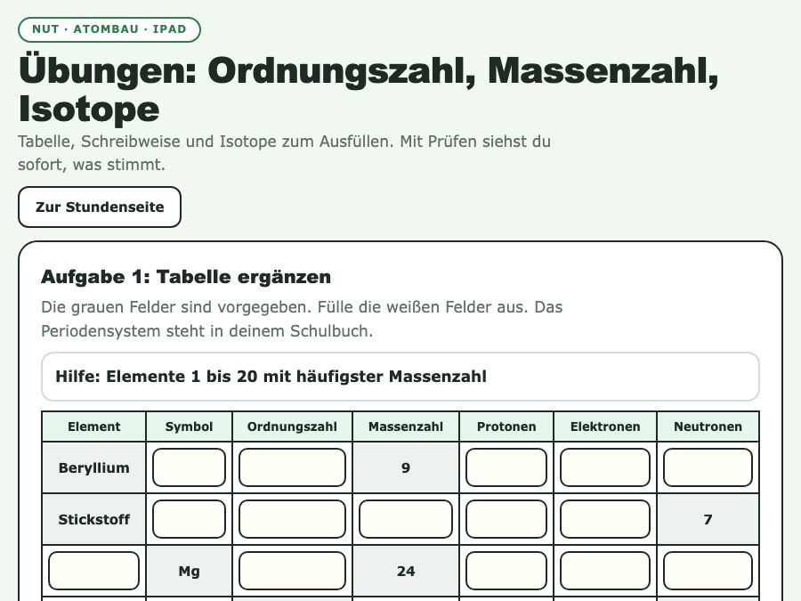
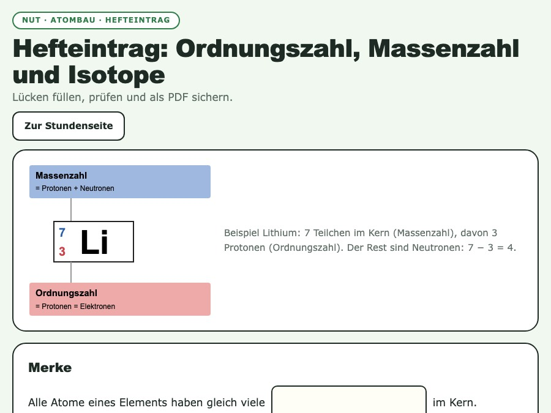

Von Ötzis Alter zu Ordnungszahl, Massenzahl und Isotopen. Atomkerne am iPad bauen, rechnen, Hefteintrag sichern.
Von oben nach unten durchgehen. Bei jeder Phase steht, was du brauchst.
Ötzi, die Eismumie aus den Ötztaler Alpen (gefunden 1991), ist etwa 5300 Jahre alt. Forscher haben das mit einem besonderen Kohlenstoff-Atom herausgefunden: C-14. Wie kann es zwei Sorten Kohlenstoff geben? Vermutungen ins Heft. Rückgriff auf Atomlabor: Was steckt im Kern?
Schreibweise am Symbol am Beispiel Lithium erarbeiten (Buch S. 52/53, Abb. 3). Protonenzahl ordnet die Elemente, Neutronenzahl = Massenzahl minus Ordnungszahl.
Zu zweit am iPad. Entdeckerkarten 1 bis 5: Neutronen dazugeben, Wasserstoff-Sorten, Kohlenstoff-12 und 14, Element wechseln, Chlor-Sorten.
Tabelle (Aufgabe 1), Schreibweise (Aufgabe 2) und Rechnen (Aufgabe 3) am iPad oder auf dem Arbeitsblatt aus dem Lehrwerk (S. 95).
Aufgabe 5 (Isotope oder nicht?) im Plenum. Falle: gleiche Massenzahl heißt nicht gleiches Element (C-14 und N-14).
Lücken füllen, prüfen, als PDF sichern oder abschreiben.
Rätselfrage beantworten: Es gibt Kohlenstoff mit 6 und mit 8 Neutronen. Das sind Isotope. C-14 ist die schwerere Sorte, genau die messen die Forscher.
Alles, was in der Stunde gebraucht wird. Interaktives öffnest du mit "Öffnen".


Tabelle, Schreibweise, Lithium-Isotope und Isotope-oder-nicht mit Prüfen
Einzeln oder zu zweit

Merke-Lücken, Wasserstoff-Isotope, Sauerstoff-Beispiel, PDF sichern
Druckfähig, 1 Seite
Liegen lokal bei dir (Lizenzmaterial). Lösungen stehen im Reiter Lehrkraft.
Die Kinder scannen den QR-Code und öffnen die Übungen. Sie laufen im Browser, ohne Anmeldung.
So landet dein fertiger Hefteintrag in deinem OneNote-Heft.
Fachlicher Hintergrund, Lösungen zum Arbeitsblatt und zum Buch, Diagnosefragen. Alles auf dieser einen Seite.
| Aufgabe 1 | Lösung | ||
|---|---|---|---|
| Massenzahl | = Zahl der Protonen + Zahl der Neutronen | ||
| Ordnungszahl | = Protonenzahl = Elektronenzahl | ||
| Element | Symbol | Ordnungszahl | Massenzahl | Protonen | Elektronen | Neutronen |
|---|---|---|---|---|---|---|
| Lithium | Li | 3 | 7 | 3 | 3 | 4 |
| Natrium | Na | 11 | 23 | 11 | 11 | 12 |
| Fluor | F | 9 | 19 | 9 | 9 | 10 |
| Kohlenstoff | C | 6 | 12 | 6 | 6 | 6 |
| Chlor | Cl | 17 | 35 | 17 | 17 | 18 |
| Schwefel | S | 16 | 32 | 16 | 16 | 16 |
Aufgabe 3: a) Die Massenzahl ist verschieden, C-14 hat 2 Neutronen mehr im Kern. b) Isotope. c) C-12: 6 e⁻, 6 p⁺ + 6 n. C-14: 6 e⁻, 6 p⁺ + 8 n.
Ein Atom hat 17 Protonen und 18 Neutronen. Welche Massenzahl hat es?
A) 17 B) 18 C) 35 D) 1
Richtig: C. A: nur Protonen (Ordnungszahl) gezählt. B: nur Neutronen. D: Neutronen minus Protonen gerechnet.
Atom 1 hat die Massenzahl 14 und 6 Protonen. Atom 2 hat die Massenzahl 14 und 7 Protonen. Sind das Isotope?
A) Ja, gleiche Massenzahl. B) Nein, andere Elemente. C) Ja, beide haben 14 Neutronen. D) Nein, sie haben verschiedene Massenzahlen.
Richtig: B. Isotope haben gleiche Protonenzahl. Atom 1 ist C-14 (8 Neutronen), Atom 2 ist N-14 (7 Neutronen). A: Verwechslung von gleicher Masse mit gleichem Element. C: Massenzahl mit Neutronenzahl verwechselt. D: die Massenzahl ist bei beiden 14.